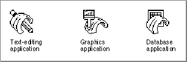
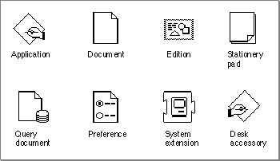
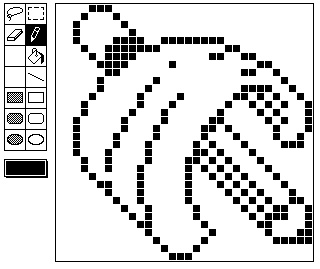

Legacy Document
Important: The information in this document is obsolete and should not be used for new development.
Important: The information in this document is obsolete and should not be used for new development.


Creating Icons for the Finder
The Finder represents your files as icons. To distinguish your product for the user, you can design your own icons for all the files associated with your application, including
For most effective display, you should create an icon family for each of your files.
- your application file itself
- standard documents created by your application
- stationery pads that users create from your application's documents
- data-sharing editions that users create from your application's documents
- other special documents, such as read-only, graphics, and query documents, which are either created by your Macintosh application or provided by you for use by other Macintosh applications
An icon family is the set of icons that represent a single object, such as an application
or a document, that the Finder displays. An entire icon family consists of large
(32-by-32 pixel) and small (16-by-16 pixel) icons, each with a mask, and each available
in three different versions of color: black and white, 4 bits of color data per pixel, and
8 bits of color data per pixel. Specifically, the following icons make up the icon family
for a single file:
Plate 3 in the front of this book shows how the SurfWriter sample application uses these resources to define the icon family for its application icon.
- a large (32-by-32 pixel) black-and-white icon and mask--both of which you define in an icon list (
'ICN#') resource- a small (16-by-16 pixel) black-and-white icon and mask--both of which you define in a small icon list (
'ics#') resource- a large (32-by-32 pixel) color icon with 4 bits of color data per pixel--which you define in a large 4-bit color icon (
'icl4') resource- a small (16-by-16 pixel) color icon with 4 bits of color data per pixel--which you define in a small 4-bit color icon (
'ics4') resource- a large (32-by-32 pixel) color icon with 8 bits of color data per pixel--which you define in a large 8-bit color icon (
'icl8') resource- a small (16-by-16 pixel) color icon with 8 bits of color data per pixel--which you define in a small 8-bit color icon (
'ics8') resource
Somewhat related to these resources are the icon (
'ICON') resource and the color icon ('cicn') resource. You can use either to describe a 32-by-32 pixel icon within some element of your application. However, the Finder does not use or display any resources that you create of type'ICON'or type'cicn'. Instead, your application uses these resources to display icons within your application. Generally, you use an icon resource to display a black-and-white icon in a menu or dialog box, as described in the chapters "Menu Manager" and "Dialog Manager" in this book. (For example, the color alert box in Plate 2 in the front of this book specifies a resource of type'cicn'for the color icon in the upper-left corner of the alert box.) If you provide a color icon ('cicn') resource with the same resource ID as the icon ('ICON') resource, the Menu Manager and the Dialog Manager display the color icons instead of the black-and-white icons for users with color monitors.Before creating icon families for your files, you should begin by designing a graphic element that all of your icon families can share and that can help the users quickly identify the files associated with your product. Figure 7-4, for example, illustrates how
a company uses the image of a wave in all of its application icons; these icons represent the SurfWriter text-editing application, the SurfPainter graphics application, and the SurfDB database application. As illustrated in Plate 4 at the front of this book, the wave element is also included in icons representing the documents, stationery pads, and editions that users create with these applications.Figure 7-4 Large black-and-white application icons for a company's product line

If you do not design your own icons, the Finder uses a set of its own default application and document icons for display. Figure 7-5 shows the Finder's default large black-and- white icons.
Figure 7-5 Default large black-and-white icons

If you don't want the Finder to display the default icons for your application or documents, you must at least define an icon list (
- Note
- Desk accessories, displayed by default with the icon shown in
Figure 7-5, were designed for early versions of Macintosh system software that did not support cooperative multitasking. Desk
accessories and applications are much more alike in their appearance and behavior in System 7. Because there are no longer any compelling reasons for creating desk accessories, you should generally write a
small application instead of a desk accessory if you wish to create
a small or simple program.
'ICN#') resource for each icon.The term icon list has become a bit of a misnomer, because you can define only two images in the icon list resource: a 32-by-32 pixel black-and-white icon and its mask.
To define color and 16-by-16 pixel icons for a file, you create additional resources, as described later in this section. (If you don't define color versions of your icons, the Finder displays the black-and-white icon defined in your icon list resource on all displays, and if you don't define 16-by-16 pixel icons, the Finder algorithmically reduces the 32-by-32 pixel icon to half size when needed.)An icon list resource defines one icon. It contains two icon descriptions: the actual icon for display and an all-black mask that shows the area covered by the icon. The Finder uses the mask to crop the icon's outline into whatever background color or pattern is on the desktop. The Finder then draws the icon into this shape. Therefore, it's important that the mask be exactly the same shape as the icon. The mask also defines the area that users need to click to select the icon. Therefore, it's best not to have any holes in the mask; otherwise, users may have trouble selecting your icon.
Figure 7-6 illustrates a black-and-white icon and its mask for an application. The area around the pencil just underneath the wave creates a problem with this sample icon and its mask: like a hole in a mask, it creates two small areas within the middle of the icon that the user cannot select with the cursor.
Figure 7-6 A black-and-white icon and its mask for an application
An icon list resource is defined to be an array of two items of type
String[128]; each bit in the first array represents a pixel in the 32-by-32 pixel icon, and each bit in the second array represents a pixel in the 32-by-32 pixel mask. Typically, you use a high-level tool such as the ResEdit application, which is available through APDA, to create your icon list resources. Figure 7-7 shows how the icon list resource for the icon in Figure 7-6 was created using the ResEdit icon editor. When you are satisfied with the appearance of your icons, you can use the DeRez decompiler to convert your icon list resources into Rez input.Listing 7-2 is a partial listing of the icon list resource's Rez input that describes the application icon shown in Figure 7-7; Listing 7-2 also shows partial listings for the icon list resources used for the icons that represent the documents created by the application. This listing and those that follow in this chapter use Rez input format to help you understand the format of the resources and see how they work together.
Figure 7-7 The ResEdit view of an icon

Listing 7-2 Rez input for an icon list resource
data 'ICN#' (128, purgeable) { /*application icon & mask*/ /*array: 2 elements*/ /*[1]: the application icon*/ $"0E 00 00 00" /*1st line of icon: 4 bytes (32 bits)*/ . /*32 lines total in icon*/ . . , /*[2]: the mask*/ $"0E 00 00 00 /*1st line of mask: 4 bytes (32 bits)*/ . /*32 lines total in mask*/ . . }; data 'ICN#' (129, purgeable) { /*text document icon and mask*/ /*icon data goes here*/ }; data 'ICN#' (130, purgeable) { /*stationery pad icon & mask*/ /*icon data goes here*/ }; data 'ICN#' (131, purgeable) { /*edition icon & mask*/ /*icon data goes here*/ };You can also define a small (16-by-16 pixel) version of your icon in a small icon list resource (that is, in a resource of resource type'ics#'). On black-and-white monitors, the Finder displays the small icon in windows when the user chooses by Small Icon
from the View menu. On black-and-white monitors, the small icon also appears in the Application menu after the user launches your application and in the Apple menu if
the user places your application or an alias to it in the Apple Menu Items folder. (Alias files and the Apple Menu Items folder are described, respectively, in "Using Aliases" beginning on page 7-37 and "Using the System Folder and Its Related Directories" beginning on page 7-39.)You should also define color versions of both large and small icons by using several resource types. The resource for each icon variation has the same resource ID as the icon list resource that defines the large black-and-white icon. For example, if the resource ID number of your application icon's icon list resource is 128, its small icon list resource should have a resource ID number of 128; and the following resources should also have resource IDs of 128: the large 4-bit color icon resource, the small 4-bit color icon resource, the large 8-bit color icon resource, and the small 8-bit color icon resource.
Don't define masks for the resources that define color icons. The large 4-bit color icon resource and large 8-bit color icon resource use the black-and-white icon mask defined in their companion icon list resource, and the small 4-bit color icon resource and small 8-bit color icon resource use the black-and-white icon mask defined in their companion
'ics#'resource. Because of this, the outline shapes of your color icons should exactly match those defined in your'ICN#'and'ics#'resources.ResEdit 2.1 includes an icon family editor to help you easily manage the creation of these related resources. See the ResEdit Reference for details.
See Macintosh Human Interface Guidelines for information about the most effective use of color and shape for your icons. It is generally best that you first create the black-and- white icons in the icon list resource and small icon list resource and then add color to them using the resources that define color icons. Don't alter the shapes of your icons among these resources; otherwise, the masks defined in the icon list resource and the small icon list resource won't match these shapes. Choose your colors from the 36 recommended icon colors in the system palette. (If you use ResEdit 2.1, these colors appear in a palette when you choose Apple Icon Colors from the Color menu.) Note that you cannot specify your own color table for these resources.
For more information about color palettes, see Inside Macintosh: Imaging. Although the Palette Manager allows you to define a palette for the system to use when it needs to define the color environment, you should rely on the system palette colors for your icons. Users may often use the Finder when your application is not running, and the user can switch to another application when your application is running. Relying on the system palette gives your icons a more consistent look in the Finder regardless of what the active application is. Also, because users can change the desktop color and pattern, your application gives users more control over their work environment if your icons rely on the system palette. Users can always alter your color definitions by selecting an icon and choosing a color from the Label menu. The Finder then blends the chosen color into those of the selected icon. To restore the original colors, users must choose None from the Label menu.
If your application creates documents, it should also define at least two additional icon families: one to be displayed for documents created by your application and another
to be displayed when the user creates a stationery pad from one of your applica-
tion's documents. ("Supporting Stationery Pads" beginning on page 7-32 describes stationery pads.)If your application creates other variations of its documents, you can assist your users
by providing different icons for the different documents. For example, TeachText has separate icon families to distinguish its read-only and graphics documents.If your application supports data sharing through the Edition Manager, your application should also define an icon family for editions. The Edition Manager (described in Inside Macintosh: Interapplication Communication) allows users to share and automatically update data from numerous documents and applications. For example, a user might want to capture sales figures and totals from within a spreadsheet and then include this information in a word-processing document that summarizes sales for a given month. If both the spreadsheet and word-processing applications support the Edition Manager, the user begins by selecting data within the spreadsheet document and creating a publisher. The spreadsheet application then writes a copy of that data to a separate file, called an edition. The edition is represented by an icon; by default, it appears as the edition icon shown in Figure 7-5 on page 7-12. If the user opens a word-processing document and creates a subscriber to the spreadsheet document's edition, the word-processing application then incorporates the desired sales figures and totals from the spreadsheet document's edition into the document.
If you design your application to create editions, consider creating an icon that uniquely identifies your editions and that associates them with your application's documents. The file type for your edition containers should be
'edtt'(for text-oriented data),'edtp'(for graphics-oriented data), or'edts'(for sound-oriented data); and the creator, of course, should be the signature of your application.If your Macintosh application is a database program or serves as a source for data (as
a spreadsheet program often does), you might wish to create query documents so that other Macintosh applications can gain access to that data through the Data Access Manager; in this case, your application should also define an icon family for its query documents. (See Inside Macintosh: Communications for information on sharing data in
this manner.)Plate 4 at the front of this book shows the large color icons for the various documents that the sample SurfWriter application creates: text documents, stationery pads,
and editions.Defining icon resources is not enough to display your icons. In addition, you must follow one of two sets of procedures:
- If you are an application developer, you must define file reference resources and a bundle resource for your application, as described in "Creating File Reference Resources" beginning on page 7-17 and "Creating a Bundle Resource" beginning on page 7-19.
- If you are an information provider or a database developer--that is, if you provide documents that are used by other applications--you don't need to create file reference resources or a bundle resource to provide document icons on Macintosh computers running System 7. You can instead create customized icons for your documents as described in the following section.